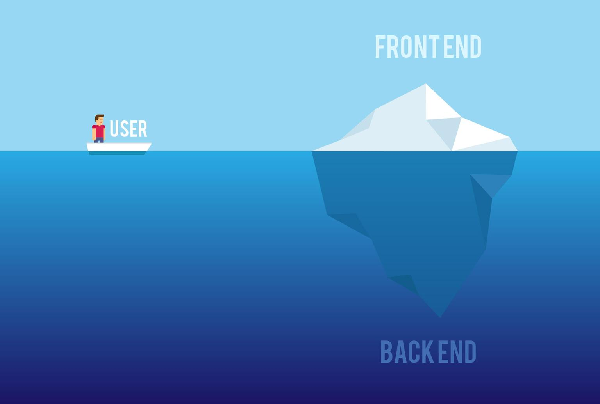

Ingenierá Web
Front-End

Diseño:
El punto de partida para todo aspirante a diseñador web es aprender las 2 tecnologías básicas.
- *HTML5: Define la estructura semántica de un sitio, mediante el uso de etiquetas. No es un lenguaje de programación.
- *CSS3: Define la apariencia del sitio web por medio de selectores. No es un lenguaje de programación.
Un framework es un conjunto de hojas de estilos y herramientas gráficas preconstruidas con el objetivo que el desarrollador se centre en los aspectos particulares del sitio, los frameworks css en sí no son una novedad, pero sin duda alguna en muchos proyectos son necesarios para agilizar el proceso de desarrollo, algunos de los más conocidos son:
Un preprocesador nos permite usar características de un lenguaje de programación pero para css, facilitando el mantenimiento y agilizando el desarrollo, algunas de las características más comunes son el uso de variables, mixins, módulos, anidación, etc, pero siempre nos entrega un css compatible con los navegadores, ya que se trata de características que no son propias de css.
Mas información de Frontend
Back End
Hasta hace unos años los lenguajes mas usados eran:
- C#
- PHP
- Java
- Ruby
- Python
Al igual que el Frontend existen frameworks para cada lenguaje, agilizando el desarrollo.
- Asp MVC
- PHP Laravel
- Java Spring
- Ruby On Rails
- Python Django
Como es de esperarse, han surgido nuevos frameworks, lenguajes con los
cuales podemos crear aplicaciones web con un muy buen rendimiento.
* Go: Es un lenguaje creado por Google, también conocido como Golang.
* NodeJs: Es un entorno de ejecución de Javascript del lado del servidor.
* .Net Core: Es una versión open source de .Net, es multiplataforma,
contiene muchas de las mismas API que .NET Framework pero es un
conjunto más pequeño.

Mas información de Backend
Stack Developer

Es una persona técnica, normalmente programador informático, que conozca
bien y le sean familiares todas las facetas del front-end y del back-end
y los diferentes sistemas operativos y componentes que quedan en medio de
esas fronteras. Actualmente, parece ser que la demanda de programadores
de estas características es una tendencia en aumento a la hora de realizar
tareas de recruiting, sobre todo en empresas tecnológicas concebidas como
startups, ya que al comenzar pocas personas y tener normalmente pocos
recursos para contratar desarrollo, sus componentes deben ser capaces de
asumir tareas de diferente índole y estar preparados para, al menos,
no manejar pero sí conocer las diferentes partes técnicas del proyecto.
Existen varios stacks que se consideran pilares para convertirte en un
full-stack developer como son:
* El desarrollo web LAMP, es decir, crear una aplicación web con
tecnologías como Linux, Apache, MySQL Y PHP.
* El desarrollo web MEAN, que consiste en MongoDB, Express, Angular y
NodeJS.
* También existe una equivalente para tecnologías en Microsoft que
consiste en Windows, Microsoft IIS, .NET, Sql Server.
Actualmente existen varias tecnologías que pueden ser intercambiadas en
cada stack para completar el flujo de la creación de un sistema
informático. Sin olvidar que debes tener conocimiento de tecnologías
como control de versiones (SVN, GIT), modelamiento de bases de datos,
manejo de PaaS (Plataform as a Service) como Heroku y Amazon y obtención
de métricas utilizando herramientas como google analytics.
Mas información de Stack Developer